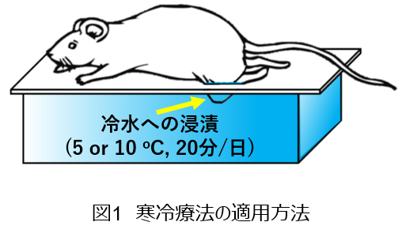
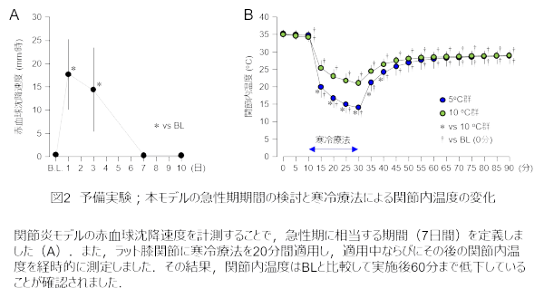
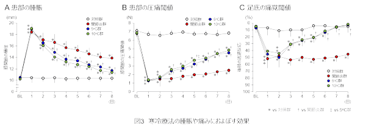
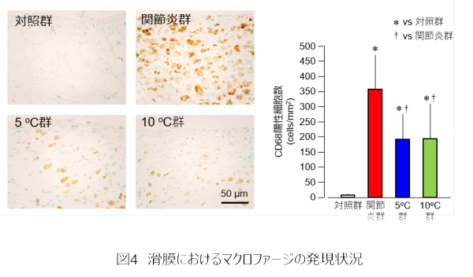
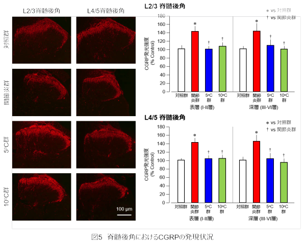

組織損傷後に生じる炎症性疼痛は身体機能や日常生活に悪影響をおよぼすとともに，慢性疼痛に発展するリスク因子の一つとされています．そして，臨床現場では炎症性疼痛に対する介入戦略の一つとして寒冷療法が適用されていますが，その効果に関する生物学的機序は明らかになっていませんでした．加えて，寒冷療法の生理学的作用を踏まえると，寒冷療法の適用温度の違いによって炎症性疼痛におよぼす影響が異なる可能性がありますが，その点についても明らかになっていませんでした．そこで，本研究では関節炎モデルラットの膝関節や脊髄を検索対象として用い，異なる温度で実施する寒冷療法が炎症性疼痛におよぼす効果を検証し，その生物学的機序を検索しました．
関節炎の発症直後から寒冷療法を適用すると，患部および患部外の痛みが早期に軽減しました．そして，その生物学的機序として，患部へのマクロファージの集積減少や脊髄後角における中枢感作の抑制が関与することが明らかになりました．さらにこの介入効果は5℃と10℃の条件で大きな違いは認められませんでした．
＜方法＞
実験動物には8週齢のWistar系雄性ラットを用い，以下の4群に振り分けました．
1）起炎剤である3％carrageenan-kaolin混合液を右側膝関節腔内に投与する関節炎群
2）関節炎惹起後，5℃の条件で寒冷療法を適用する群（5℃群；図1）
3）関節炎惹起後，10℃の条件で寒冷療法を適用する群（10℃群；図1）
4）関節炎惹起の疑似処置として生理食塩水を投与する対照群
なお，本研究に先立って寒冷療法の適用条件の決定に関わる予備実験を行い，本関節炎モデルの急性期に相当する期間と寒冷療法に伴う関節内温度の推移を検索しました（図2-A，B）．そして，これらの結果を踏まえ，寒冷療法は起炎剤投与後7日間，1日20分間適用しました．
実験期間中は患部の炎症症状として膝関節の腫脹と圧痛閾値を，患部外の痛みの評価として足底の機械的刺激に対する痛覚閾値を毎日評価しました．なお，患部の圧痛閾値の評価にはPush pull gageを用い，後肢の逃避反応が出現する荷重量を評価しました．また，足底の機械的刺激に対する痛覚閾値については，4gならびに15gのvon Frey filamentを用い，10回刺激した際の痛み関連行動の出現回数をカウントしました．実験期間終了後は関節試料ならびにL2/3（膝関節の髄節レベル）・L4/5（足底の髄節レベル）の脊髄試料を採取しました．そして，膝関節はマクロファージのマーカーであるCD68に対する免疫組織学的染色に供し，滑膜におけるCD68陽性細胞数を計測しました．また，脊髄は中枢感作の指標であるカルシトニン遺伝子関連ペプチド（CGRP）に対する蛍光免疫染色に供し，脊髄後角の表層ならびに深層における単位面積あたりの発光強度を算出し，その発現量を半定量化しました．


＜結果＞
関節炎の発症直後から寒冷療法を適用すると，患部の腫脹や痛み，患部の遠隔部である足底の二次性痛覚過敏が早期に改善することが明らかとなりました（図3A-C）．また，滑膜におけるマクロファージ数は関節炎群と比較すると5℃群と10℃群で減少しており，この2群間には有意差を認めませんでした（図4）．これは寒冷療法によって患部の組織学的な炎症が軽減したことを示しており，痛みや腫脹の早期軽減に関わる生物学的機序のひとつであると推察されました．そして，脊髄後角の表層と深層におけるCGRPの発光強度は関節炎群と比較すると5℃群と10℃群で低下しており，この2群間に有意差はなく，L2/3ならびにL4/5のいずれの髄節レベルでも同様の結果を示しました（図5）．これは寒冷療法によって患部の炎症が早期に軽減されたことで脊髄における中枢感作が抑制された結果と考えられ，このような変化が足底の二次性痛覚過敏の早期改善に関与していると推察されました．



本研究の結果から，関節炎の発症直後から寒冷療法を適用すると，患部の炎症性疼痛が早期に軽減され，慢性疼痛の予防につながる可能性が示唆されました．また，5℃群と10℃群の効果の比較では差が認められなかったことから，臨床で推奨されている約10℃の適用温度で寒冷療法を実施しても，組織損傷後の急性期における炎症性疼痛に対して十分な効果が得られると推察されます．